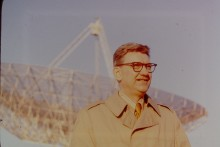

Please note: the AAS Obituaries are temporarily being hosted on this website while their full content is being ingested into the PubPub publishing platform newly adopted by the Bulletin of the American Astronomical Society. When the migration is complete, your existing links will take you to the final, migrated content. Contact peter.williams@aas.org with any questions.
George W. Swenson Jr. (1922-2017)
George W. Swenson Jr., radio telescope builder and charismatic member of the astronomy and of the electrical engineering (EE) departments at the University of Illinois, Champaign-Urbana, for more than 60 years, died at his home in Savoy, IL, on 22 February 2017. He was 94.
George (known to family members as “Bud”) was born in Minneapolis, MN, on 22 September 1922, and grew up mostly in Houghton, MI, where his father, and namesake, was the founding faculty member and chair of the electrical engineering department at the Michigan Institute of Mining and Technology (now Michigan Technological University) from 1928 until his retirement in 1960. His father was a major influence on his life, and George decided early on to follow in his footsteps after he watched him solve practical problems with large power generators and also after developing an interest in amateur radio (call sign W9HTD). He enrolled in Michigan Tech in 1940 after winning a full scholarship in the national RCA talent search. In 1942, he joined active military service in the Signal Corps of the US Army but managed to finish his BS in EE from Michigan Tech in a correspondence program in 1944. He left the Army a second lieutenant and enrolled at MIT, where he received an MS in EE. He went on to get a PhD in EE from the University of Wisconsin in 1951, with a thesis involving the development of an analog computer to solve a class of multidimensional partial differential equations, entitled “A Direct Current Network Analyzer for Solving Wave-Equation Boundary-Value Problems.” After stints on the faculties of Washington University in St. Louis, the University of Alaska in Fairbanks, and Michigan State University in East Lansing, he took up a joint appointment in 1956 in the EE and astronomy departments at the University of Illinois at Champaign- Urbana, where he remained for the rest of his life. After he formally retired in 1988, he remained active in research and training students until shortly before his death.
George McVittie, who rejuvenated the modern astronomy department at the University of Illinois beginning in 1952, wanted to establish a program in radio astronomy and build a large radio telescope. He recruited George, who had developed an interest in radio astronomy while at the University of Alaska, where he used radio sources to study ionospheric scintillation. McVittie saw the need for a large-scale survey at higher frequencies than had been used up to that time to help resolve the controversies over source counts. George designed and built a 600 x 400 ft. cylindrical parabolic antenna at a new site later called the Vermillion River Radio Observatory near Danville, IL. Making clever use of the natural topography, it was a fixed transit instrument with its declination settable by electronically phasing the 274 nonuniformly distributed feed elements. Thousands of sources were catalogued at 610 MHz from 1961 to 1970. The most well-known source from the catalog was VRO 42.22.01, which was identified with the “star” BL Lacertae. It became the prototype for a class of active galactic nuclei known as BL Lac Objects, a subclass of blazars.
The launch of Sputnik 1 on 4 October 1957 came as a surprise to the world outside the USSR. Nonetheless, George and his colleagues set up a 40 MHz receiver and detected the satellite within a day of its launch. Within a short time, George had built a radio interferometer to make crude position measurements of the satellite along with Doppler tracking information. This data allowed Ivan King, then on the faculty of the Illinois astronomy department, to produce one of the earliest ephemerides for Sputnik. George immediately recognized the value of satellite transmitters to facilitate measurements of the properties of the ionosphere. This led to a major program in ionosphere research at Illinois that continues to this day. He obtained a few thousand dollars of support from the US Air Force to build two completely self-contained beacons known as Nora-1 and 2 for the Discovery series of satellites. Long before any quality assurance programs were in place, George built much of the electronics for these packages in the basement of his home. George parlayed a sabbatical leave in 1964 into a four-year appointment at the National Radio Astronomy Observatory, where he led the design team for the Very Large Array. The VLA, dedicated in 1980, had many novel design features, such as its nonuniform spacing of the antenna elements, which eliminated redundant baseline spacings. He subsequently wrote an article in the Annual Reviews of Astronomy and Astrophysics on radio interferometry and also investigated how radio interferometry techniques could be adapted to optical wavelengths.
George was a big-picture thinker. It was quite natural that he was a member of the Project Cyclops team that was assembled in 1971 to investigate how a very ambitious ground array could be built to search for extraterrestrial intelligence (SETI). The project was so ambitious that it never got off the ground, but it anticipated many of the issues facing the current Square Kilometre Array (SKA) project.
George had a long involvement in the development of very long baseline interferometry (VLBI), beginning with a sabbatical leave at Caltech in 1972-73. In 1967, he had obtained funding from the National Science Foundation to build a 120-foot parabolic antenna at the VRO. The telescope was constructed entirely in the machine shops and other facilities at the university. George envisioned the antenna to be the first of an array of three or more elements of an interferometer. The telescope was finished in 1970, but additional funds could not be found for the array. With his colleague Lew Snyder, he used the antenna to study molecules in comets. Its most effective use came as an element in the original six-element US VLBI Network in 1976. The antenna, strategically located in Illinois and filling the “Midwestern gap,” provided baselines of intermediate length that were essential for imaging. In 1975, he and Ken Kellermann wrote an important paper describing the requirements and characteristics of a dedicated VLBI array, which became the basis for the Very Long Baseline Array, dedicated in 1994. George and Alan Yen led the team that demonstrated the use of a communication satellite to relay VLBI data to a processing center without the need for tape recorders. Unfortunately, the technique never proved to be economically viable.
George had an interest in acoustics that spanned his entire career. He was able to develop methods by analogy to those used in electrical engineering. He wrote the textbook Principles of Modern Acoustics in 1953. Most of his work after retirement involved acoustics and was sponsored by the research laboratory of the Army Corps of Engineers.
George, working with his colleague N. C. Mathur, developed a keen interest in the theoretical foundations of interferometry and the coherence properties of electromagnetic fields. He teamed up with A. Richard Thompson and James Moran to write the textbook Interferometry and Synthesis in Radio Astronomy, published in 1986. The third edition of the book was released just a week after his passing. It is known familiarly as “TMS” and often referred to as the “bible of radio interferometry.” George was very adamant that the title not include the term “aperture synthesis,” which he considered to be misleading.
Going back to his amateur radio roots, he wrote a five-part article in Sky and Telescope entitled “An Amateur Radio Telescope,” which was published in book form by Pachart Publishing House in 1980. This work was influential in the formation of the Society of Amateur Radio Astronomers, founded in 1981.
George loved the outdoors, the more remote from civilization the better. He held a private pilot’s license for more than 60 years and received a commendation from the FAA for never having had an accident. He flew all over Alaska and the Canadian Arctic in many trips. He was the first to summit Institute Peak in Alaska, which his party named. He paddled a small canoe on Lake Superior, circumnavigating Isle Royale. He was an enthusiastic birder with a long Life List. An event before the annual meeting of the International Union of Radio Science (URSI), in Boulder, CO, during the 1970s was a day hike in the Rockies that he and (usually) Marshall Cohen organized. He also organized several “RATSNEST” trips: Radio Astronomers Trans-Sierra Nevada Expedition and Sightseeing Tour. George used his piloting ability to facilitate various research projects. These including making aerial maps of the distribution of the sites of radio interference over cities (he called it “upside-down radio astronomy”) and tracking birds equipped with radio beacons.
George served as chair of the astronomy department from 1970 to 1972, following the retirement of his mentor, George McVittie, and chair of the EE department from 1979 until 1985. He was also a member of the National Academy of Engineering. George married Virginia Savard in 1943, and they had four children. This marriage ended in divorce. He later married Joy Janice Swenson in 1971, who survives him.
George was very well known for his sharply honed storytelling ability (he referred to himself as a “compulsive” story teller). These included tales of landing a plane on a remote sandbar in northern Canada, transporting and feeding live mosquitoes from the Canadian tundra to Illinois for research purposes, soldering up the electronic packages for early satellite payloads, and many events related to life in the remote cabin he built for his family on Gratiot Lake on the Upper Peninsula (Keweenaw County) of Michigan.
An enduring image of George was his departure from a meeting in Green Bank celebrating the 30th anniversary of the dedication of the 140-foot antenna in 1995. He stuffed his 6 ft. 4 in. body into his tiny Cessna 150, roared down the runway, and climbed into the sky, headed west back to Illinois.
George suffered from back problems and had difficulty walking in the last decade of his life. However, he was up and about, with the aid of a walker, on the day of his death. George will be remembered for his deep curiosity about the world around him as well as for his kindness and congeniality. Perhaps it is summed up best by Ken Kellermann, who remarked, “It was a pleasure working with George. He made radio astronomy seem like such great fun.”
Affiliations: Washington University in St. Louis, University of Alaska, Michigan State University, and the University of Illinois at Champaign-Urbana (60 years).
Marshall Cohen, Ken Kellermann, Jeffrey Lichtman, Leslie Looney, Lew Snyder, Jud Swenson and Dick Thompson contributed to this obituary.
Swenson portrait (in background, the 120-foot radio telescope at the Vermilion River Observatory, Univ of Illinois).
Group photo: George Swenson Jr. at the IAU General Assembly in Moscow 1958. (l to r) unidentified, George Field, George Swenson, Mary Zirin, interpreter, Hal Zirin, and Marshall Cohen. Photo taken by Ed Salpeter (from the files of Marshall Cohen).
Obituary written by: James Moran (SAO)
BAAS Citation: BAAS, 2017, 49, 035